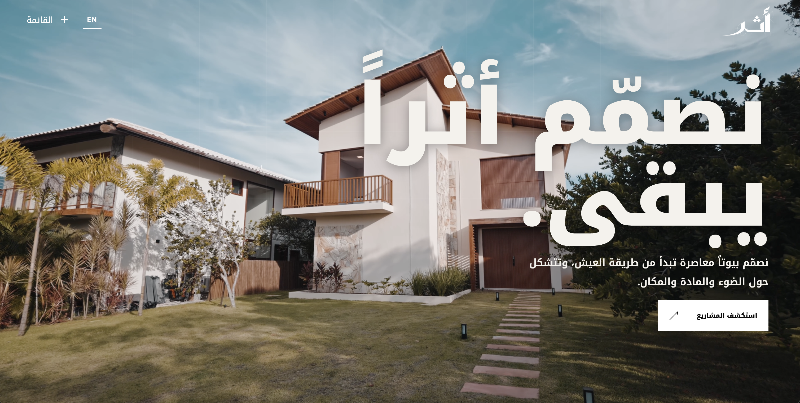

AI-Built
Experiences
I use AI-assisted development to take selected designs beyond the handoff and build them myself. It gives me tighter control over interaction, faster experimentation and a direct path from design decision to live experience.
The design direction stays mine. AI becomes part of the implementation workflow.

Athar
A bilingual architectural studio experience built around modern villa architecture, cinematic pacing and interactions that make the website feel like part of the architecture itself.
The still image is only the doorway. Athar was designed to move, respond and unfold in the browser, so the live experience is part of the case study.

MIRA Quest
An interactive space-history adventure that lets players discover the stories of Opportunity on Mars and Apollo 11's Eagle on the Moon.
Designed and built for a NASA Space Apps hackathon, combining UX/UI, scientific storytelling, gameplay, and a playable browser experience.